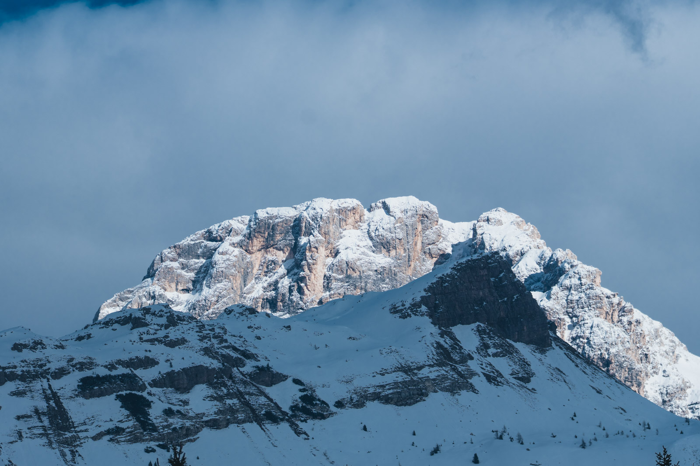
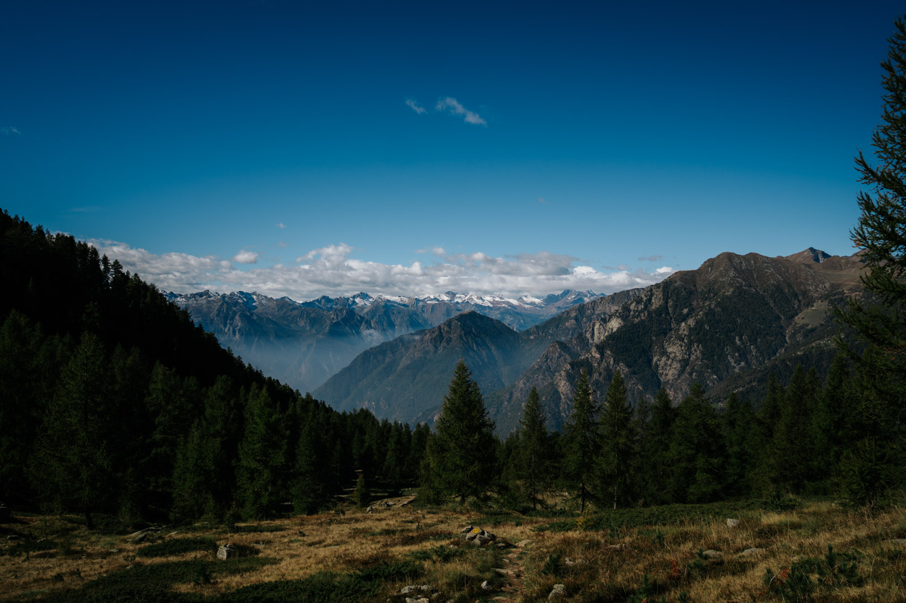
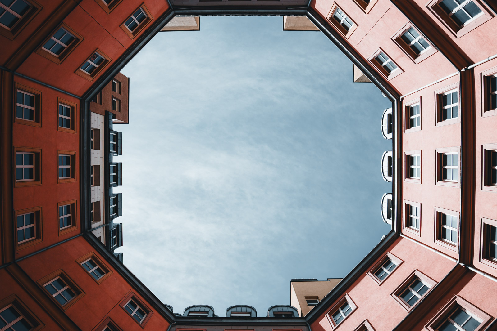
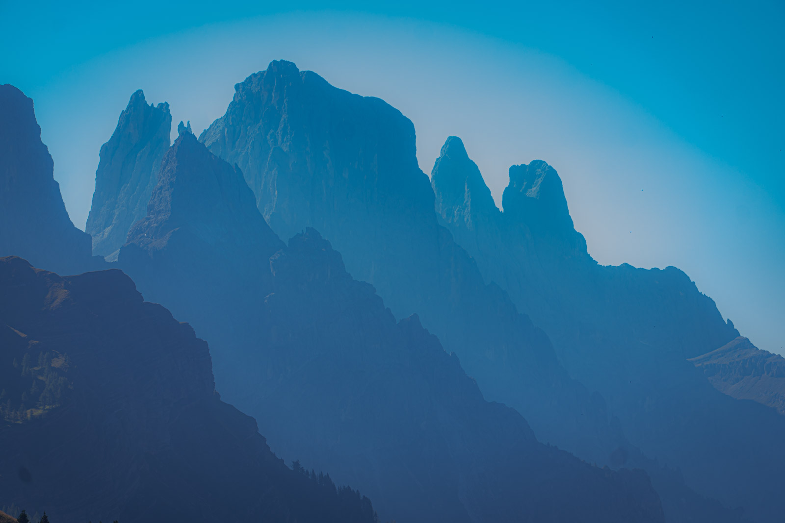

Focale e angolo di campo
La focale, in millimetri, dice quanto è ampio lo sguardo dell'obiettivo. Focale corta, sguardo largo. Focale lunga, sguardo stretto.
| Focale equivalente | Angolo | Famiglia |
|---|---|---|
| 14 mm | 114° | Ultragrandangolo |
| 24 mm | 84° | Grandangolo |
| 35 mm | 63° | Grandangolo moderato |
| 50 mm | 47° | Normale |
| 85 mm | 29° | Medio tele |
| 200 mm | 12° | Tele |
| 400 mm e oltre | 6° e meno | Supertele |
Il 50 mm si chiama normale perché il suo angolo è vicino a quello che percepiamo guardando con attenzione. Non è una legge, è una convenzione.
La prospettiva dipende dalla distanza
Questa è la lezione più importante del modulo. Si dice spesso che il teleobiettivo comprime e il grandangolo dilata. È vero solo in parte.
La prospettiva, cioè il rapporto di grandezza tra le cose vicine e quelle lontane, dipende solo da dove ti trovi. La focale decide quanto di quella prospettiva finisce nel fotogramma.
Con il tele stai lontano e prendi un pezzo piccolo della scena. Gli oggetti a distanze diverse sembrano schiacciati uno sull'altro. Con il grandangolo stai vicino e prendi molto. Le cose vicine diventano enormi, quelle lontane piccolissime.


Il grandangolo
Il grandangolo non serve a far entrare tutto. Serve ad avvicinarsi. La sua forza è un primo piano forte che porta l'occhio verso lo sfondo.

- Avvicinati al primo piano. Un sasso, un fiore, una ringhiera. Se non c'è niente di vicino, il grandangolo rende la scena vuota.
- Attento ai bordi. Linee e volti ai margini si deformano.
- Tieni la fotocamera dritta se non vuoi che gli edifici sembrino cadere all'indietro.
Il teleobiettivo
Il tele isola. Prende un dettaglio lontano e lo stacca dal resto. Sfoca facilmente lo sfondo e avvicina soggetti che non puoi avvicinare, come animali selvatici o una cima lontana.

- Serve un tempo rapido. Ogni tremolio si vede di più. Ricorda il tempo di sicurezza.
- Il calore e la foschia peggiorano la nitidezza dei soggetti molto lontani. Le ore fresche del mattino aiutano.
- Usalo anche nel paesaggio. Isolare una parte di montagna spesso racconta più di un panorama.
Fissi o zoom
Un obiettivo fisso ha una sola focale. Uno zoom ne copre diverse.
| Fisso | Zoom | |
|---|---|---|
| Luminosità | Spesso f/1,4-f/2 | Spesso f/2,8-f/6,3 |
| Peso | Leggero | Più pesante |
| Versatilità | Una sola inquadratura | Molte |
| Per imparare | Ti obbliga a muoverti | Ti fa restare fermo |
Un esercizio che consiglio a tutti: per un mese usa una sola focale. Con lo zoom bloccalo su 35 mm o 50 mm equivalenti. Impari a vedere in quella focale e smetti di zoomare al posto di camminare.
Quale obiettivo per cosa
| Genere | Focale equivalente tipica |
|---|---|
| Paesaggio | 16-35 mm, e un tele per i dettagli |
| Street | 28-50 mm |
| Viaggio | Uno zoom 24-105 mm |
| Ritratto | 50-135 mm |
| Animali selvatici e uccelli | 300-600 mm |
| Architettura | 16-24 mm |
Sono punti di partenza. Le foto migliori spesso nascono usando la focale sbagliata per il genere giusto.
Esercizio
Circa 40 minuti, all'aperto
La prova della prospettiva
- Metti una persona o un oggetto davanti a uno sfondo lontano, come un palazzo o una collina.
- Fai una foto con la focale più corta, vicino al soggetto, in modo che riempia metà del fotogramma.
- Allontanati e rifai la foto con la focale più lunga, con il soggetto della stessa grandezza.
- Confronta lo sfondo. Il soggetto è uguale, lo sfondo cambia completamente.